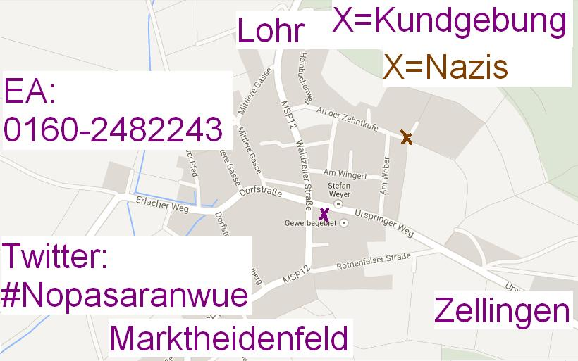

Auch weiterhin bleibt unklar, wieviele Neo-Nazis heute tatsächlich den Weg nach Roden-Ansbach finden werden. Findet die kurzfristig angemeldetete Kundgebung des FNS wirklich als „Ersatzveranstaltung“ zum untersagten „Europa erwacht – Festival“ statt, oder wird es lediglich eine Ablenkungs- bzw. Jammerkundgebung mit wenigen Neo-Nazis, wie bereits im Vorfeld des 1.Mai in Würzburg, als sich Bauerfeind und Co. mit „Knebel“ im Mund lächerlich machten und das Konzert selbst findet an anderer Stelle statt?! Dies wird sich leider erst heute vor Ort zeigen.
Aktuell gibt es Berichte, dass doch einige Neo-Nazis bereits in der Umgebung unterweg sind. Zudem sollten Besucher_innen der Laurentimesse in Marktheidenfeld dieses Wochenende damit rechnen, dass dort (größere) Gruppen von Neo-Nazis auflaufen!
Genehmigt ist die Nazi-Veranstaltung in der Staße „An der Zehntkufe“ im Bereich des dortigen „Wendehammers“, vor dem Anwesen eines lokalen Neo-Nazi. Bekannt ist, dass diese Veranstaltung von 10.00 bis 20.00 Uhr stattfinden darf und auch die Redner und Bands dort wie ursprünglich geplant auftreten sollen bzw. dürfen. Ob dies tatsächlich so stattfindet bleibt abzuwarten, da es u.a. eine Lautstärkebegrenzung von max. 70dB gibt. Auch die öffentliche Mobilisierung der Neo-Nazis zu dieser Kundgebung ist als eher nicht wahrnehmbar zu bezeichnen.
Die Gegenmobilisierung ist aufgrund der Begleitumstände (welche zu großen Teilen nicht in unseren Händen lagen) auch als eher schwierig zu beschreiben. Die „Piraten“ haben ihre Anmeldung einer (Gegen-)Kundgebung wieder zurück genommen. Somit steht als angemeldeter Anlaufpunkt aktuell nur der „Gottesdienst“ um 12.30 Uhr und die Kundgebung des Bündnis „MSP ist bunt“ von 13.00 bis ca. 15.00 Uhr zur Verfügung. Diese findet wie bereits 2011 auf dem Grundstück eines Busunternehmens im „Urspringer Weg“ (ca. 100m Luftlinie von der Naziveranstaltung) statt.
Zur Anreise: Es ist mit massiven Vorkontrollen an den Zufahrtsstraßen nach Roden-Ansbach zu rechnen. Eine direkte Anreise mit öffentlichen Verkehrsmittln ist mit schwierig noch sehr wohlwollend beschrieben. Da nicht auszuschließen ist, bzw. sogar damit gerechnet werden muss, dass sich Neo-Nazis frei im Ort bewegen, schaut wo ihr parkt und ob ihr einen Blick auf die Autos werfen könnt! Die Polizei wird mit einem Großaufgebot vor Ort sein, was in etwa der Einwohnerzahl des Dorfes entsprechen dürfte.
Infrastruktur: Es wird einen EA (Ermittlungsauschuss) geben. Dieser wird ab ca. 11Uhr unter 0160 -2482243 erreichbar sein. Aktuelle Infos wird es wenn nötig über den Twitter-Account #NoPasaranWue geben. Demosanis werden ebenso für den Notfall vor Ort sein.
Zu den Hintergründen des „Europa erwacht – Festival“ und den Vorgängerveranstaltung(en) „Nationaler Frankentag“ empfehlen wir euch u.a. die sehr guten Beiträge auf AIDA, siehe u.a. hier
Wir bitten um Nachsicht, dass die Infos dieses Mal erst sehr spät und zudem doch eher bescheiden ausfallen. Leider war bzw. ist dies nicht anders möglich (gewesen), wir hoffen in Zukunft wieder frühzeitiger und ausführlicher Informationen und Strukturen vor Ort bereitstellen zu können!
Alerta Antifascista!
Update: Aktionskarte auf die Schnelle:
